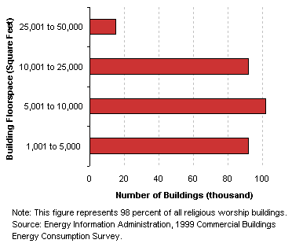
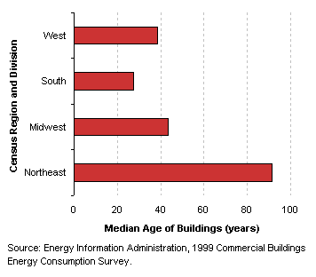
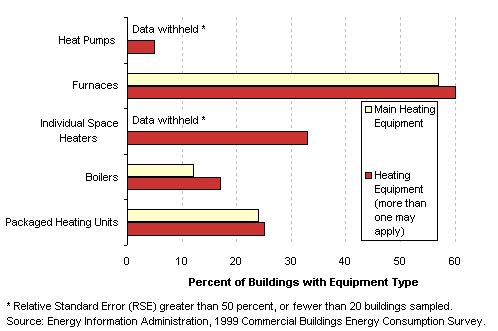
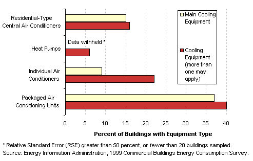
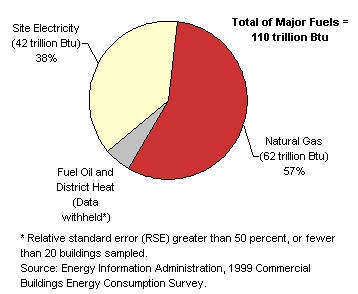

|
|
|
Characteristics
by Activity...
Religious
Worship
|
Religious
worship buildings are those in which people gather for religious activities.
Basic Characteristics
[ See also: Equipment | Activity
Subcategories | Energy Use
]
Religious
Worship Buildings...
- 93 percent of religious worship buildings were
less than 25,000 square feet.
- The oldest religious worship buildings were found
in the Northeast, where the median age was over two and half times
older than those in South, where religious worship buildings were
the newest.
Tables:
Top
|
|
Number
of Religious Worship Buildings by Predominant Building Size Categories

Median Age of
Religious Worship Buildings by Census Region

|
Equipment
Table: Buildings,
Size, and Age Data by Equipment Types
Predominant Heating
Equipment Types in Religious Worship Buildings

Predominant
Cooling Equipment Types in Religious Worship Buildings

Top
Activity
Subcategories
There were no subcategories
collected for religious worship buildings.
Top
Energy
Use
Religious
worship buildings used 110 trillion Btu of total energy, which was
2 percent of total energy consumption for all commercial buildings,
though they comprised 5 percent of commercial floorspace. They had
the second lowest energy intensity of all the building types, with
only vacant buildings using less energy per square foot.
|
|
Tables:
Reference:
What is a Btu?
|
|
Energy Consumption in Religious Worship Buildings by Energy Source
 |
The
total energy consumption data in the figures and tables above are “site
energy,” which includes only the amount of electricity consumed within
the building; energy use can also be expressed as “primary energy,”
which includes the energy consumed during the generation and transmission
of electricity. Religious
worship buildings used
126 trillion Btu of primary electricity, so their total primary energy was
194 trillion Btu, or 2 percent of total primary consumption for all commercial
buildings.
Top
Specific questions may be directed to:
Joelle Michaels
joelle.michaels@eia.doe.gov
CBECS Manager
Release date: July 24, 2002
Page last modified:
May 4, 2009 2:52 PM
http://www.eia.gov/consumption/commercial/data/archive/cbecs/pba99/worship/worship.html
If you are having any technical problems with this
site, please contact the EIA webmaster at wmaster@eia.doe.gov.
|